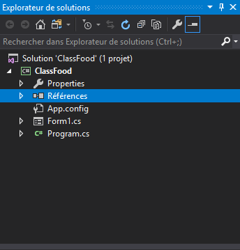
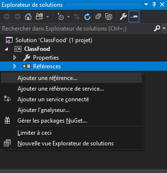
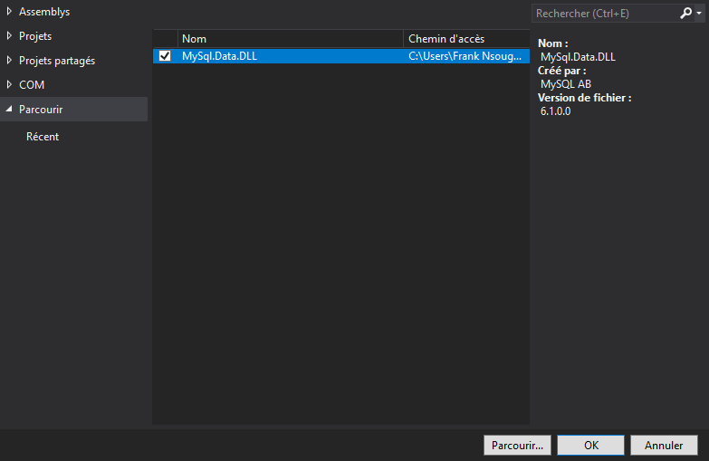
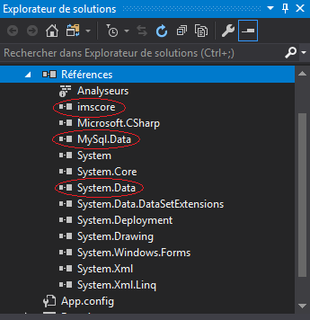
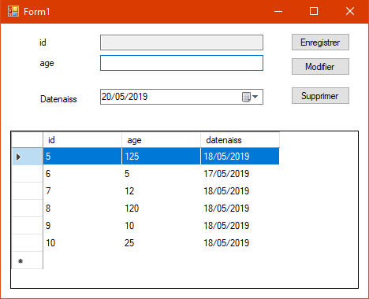

Insertion, Modification, Suppréssion dans une base de données.
Diminuer les pertes de temps et coder plus facilement !
Le tableau ci-dessous affiche la liste des IDEs, frameworks et langages compatibles avec la librairie.
| Fichier | IDEs | Framework (Cible) | Langages | SGBD | Références |
|---|---|---|---|---|---|
| imscore.dll | Visual Studio 2012 ou + | 4.5 | VB, C#, C++ | Access, MySQL, SQLServer | MySQL.Data.DLL, Microsoft.ACE.OLEDB.DLL |
| imscore.jar | NetBeans 6.8 ou + | - | Java | Access, MySQL, SQLServer | mysql-connector.jar, rsxml.jar, jcalendar.jar, sqljdbc4-0.jar, canaccess.jar |
NB : Les Références sont les bibliothèques que vous devez d'abord ajouter à votre projet en premier. Elles sont fournies directement avec la bibliothèque imscore pour ceux qui ne les ont pas encore.
Ensemble des méthodes et explications
| Méthodes | Type | Surcharge(s) | Paramàtres |
|---|---|---|---|
| ImsCore (Visual C#, NetBeans), ImsCore.ImsCore (VB) |
Contructeur | 1 | [Formulaire_Actif], SGBDProvider.Access, "[source_du_fichier.accdb]" (Access) [Formulaire_Actif], SGBDProvider.SQLServer "Data Source=[adresse_sqlserver];Initial Catalog=[nom_base_de_donnees];Integrated Security=True" (SQLServer) [Formulaire_Actif], SGBDProvider.MySQL, "Server=[adresse_mysqlserver];Database=[nom_base_de_donnees];Uid=[utilisateur_base_de_donnees];Pwd=[mot_de_passe_base_de_donnees]" (MySQL) |
| newQuery | Procédure | 4 | queryType : Type de requête (Insertion, Modification, Suppression ou affichage), (Obligatoire) tableName : Nom de la table dans la base de données, (Obligatoire) vs : ensemble des valeurs des champs à traiter, (Obligatoire sauf pour suppression et affichage) insertType : Type d'insertion des données, cols : restriction à respecter (ex: si on veut update l'age de l'id = 5, on va ecrire new Object(){"age:" + 5}), dataGrid : le tableau où seront affichées les données, expr : contrainte de génération de clé à respecter (ex: générer la clé primaire avec une chaine commençant par "ACP"), success : le texte qui sera affiché si le traitement a reussi, warning : le texte qui sera affiché si on retrouve une occurence n fois |
Pour ajouter ImsCore à votre projet, faites :
Par exemple mon projet se nomme "ClassFood", suivez les étapes ci-dessous :
1. Placez le curseur sur "Références"

2. Faites clique droit et placez-vous sur "Ajouter une référence"

3. Cliquez sur "Parcourir...", placez-vous dans le dossier imscore/visual studio/ qui est soit dans un support ou dans votre disque dur et selectionnez et cochez tous les fichiers ".dll" qui sont dans ce dossier

4. Vérifier si la référence "imscore" a bien été ajoutée, et si les références "NySql.Data"(MySQL) et "System.Data"(SQLServer et Access) sont aussi ajoutées. Si le driver d'Access n'est pas installer aller dans le dossier drivers et lancer le(s) fichier(s) ".exe"
NB: Si vous utilisez vb comme langage, les références ne seront pas directement visibles dans l'explorateur de solution mais elles sont bel et bien présentes.

6. Importer la "référence" en tête de page
6.1 VB
Imports ImsCore
6.2 C#
using Imscore;
1. Soit le formulaire "Form1" avec pour SGBD (MySQL) contenant la table "Table1 :

2. le code correspondant à cette fenêtre est le suivant
Imports Imscore Public Class Form1 ' Creer une instance de la classe ImsCore ' le caractere _ permet d'aller à la ligne Dim o As New Imscore.ImsCore(ActiveForm, SGBDProvider.MySQL, "Server=localhost;Database=classfood;Uid=root;Pwd=") ' Lorsque le formulaire se charge Private Sub Form1_Load(sender As Object, e As EventArgs) Handles MyBase.Load ' Charge les données de la bd dans le dataGridView1 o.newQuery(QueryType.View, "Table1", DataGridView1) End Sub ' Lorsqu'on clique sur le bouton Enregistrer Private Sub Enregistrer_Click(sender As Object, e As EventArgs) Handles Enregistrer.Click ' On insert les données dans la table "Table1" o.newQuery(QueryType.Insert, "Table1", _ New Object() { _ CInt(TextBox3.Text), _ DateTime.Parse(DateTimePicker1.Value.ToShortDateString()) _ }, _ InsertType.AutoIncrement, _ New Object() { _ "age" _ }, _ DataGridView1, _ Nothing, _ success:="Enregistre !", warning:="Doublon") End Sub ' Lorsqu'on clique sur le bouton Modifier Private Sub Modifier_Click(sender As Object, e As EventArgs) Handles Modifier.Click ' On update les données la table "Table1" de l'id = 5 o.newQuery(QueryType.Update, "Table1", _ New Object() { _ "age:" & CInt(TextBox3.Text), _ "datenaiss:#" & DateTime.Parse(DateTimePicker1.Value.ToShortDateString()) & "#" _ }, _ InsertType.Nothing, _ New Object() { _ "id:" & 5 _ }, DataGridView1, _ Nothing, _ success:="Modifié !", warning:=Nothing) End Sub ' Lorsqu'on clique sur le bouton Supprimer Private Sub Supprimer_Click(sender As Object, e As EventArgs) Handles Supprimer.Click ' On supprime les données la table "Table1" de l'id = 5 o.newQuery(QueryType.Delete, "Table1", "id:" & 5, success:= "Supprimé !") End Sub ' Lorsqu'on clique sur une ligne du dataGridView1 Private Sub DataGridView1_CellClick(sender As Object, e As DataGridViewCellEventArgs) Handles DataGridView1.CellClick ' Charge les données du dataGridView1 dans les champs respectifs o.newQuery(QueryType.View, "Table1", dataGridView1.CurrentCell.RowIndex, dataGridView1, _ New Object() _ { _ textBox1, _ textBox2, _ dateTimePicker1 _ }) End Sub End Class
using System; using System.Windows.Forms; using Imscore; namespace ClassFood { public partial class Form1 : Form { // Creer une instance de la classe ImsCore ImsCore o = new ImsCore(Form1.ActiveForm, SGBDProvider.MySQL, @"Server=localhost;Database=classfood;Uid=root;Pwd="); public Form1() { InitializeComponent(); } // Lorsque le formulaire se charge private void Form1_Load(object sender, EventArgs e) { // Charge les données de la bd dans le dataGridView1 o.newQuery(QueryType.View, "Table1", dataGridView1); } // Lorsqu'on clique sur le bouton Enregistrer private void Enregistrer_Click(object sender, EventArgs e) { // On insert les données dans la table "Table1" o.newQuery(QueryType.Insert, "Table1", new object[] { int.Parse(textBox2.Text), DateTime.Parse(dateTimePicker1.Value.ToString()) }, InsertType.AutoIncrement, new object[] { "age" }, dataGridView1, null, success: "Enregistré !", warning: "Existe déjà !"); } // Lorsqu'on clique sur le bouton Modifier private void Modifier_Click(object sender, EventArgs e) { // On update les données la table "Table1" de l'id = 5 o.newQuery(QueryType.Update, "Table1", new object[] { "age:" + int.Parse(textBox2.Text), "datenaiss:#" + DateTime.Parse(dateTimePicker1.Value.ToString()) + "#" }, InsertType.Nothing, new object[] { "id:" + 5 }, dataGridView1, null, success: "modifié !", warning: null); } // Lorsqu'on clique sur le bouton Supprimer private void Supprimer_Click(object sender, EventArgs e) { // On supprime les données la table "Table1" de l'id = 5 o.newQuery(QueryType.Delete, "Table1", "id:" + 5, success: "Supprimé !"); } // Lorsqu'on clique sur une ligne du dataGridView1 private void dataGridView1_CellClick(object sender, DataGridViewCellEventArgs e) { // Charge les données du dataGridView1 dans les champs respectifs o.newQuery(QueryType.View, "Table1", dataGridView1.CurrentCell.RowIndex, dataGridView1, new object[] { textBox1, textBox2, dateTimePicker1 }); } } }
Veuillez me contacter au :